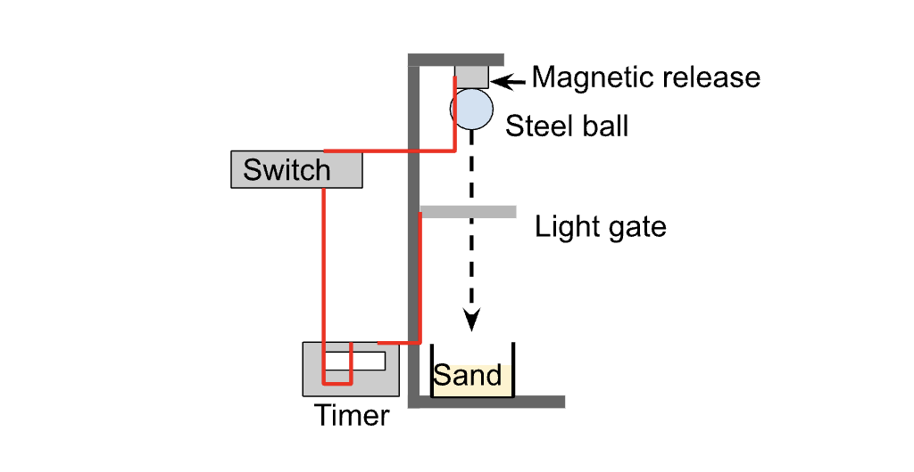

Referencing, Introduction, Theory and Methods#
Learning Objectives:#
By the end of this session you should:
Understand how to source information for a lab report.
Be aware of reference managers and why we use them.
Understand how to reference appropriately using the Harvard and APA styles.
Practise writing the introduction, theory and methods section of a lab report.
In this session, we are going to work towards having an Introduction and Methods section written for one of your lab experiments. We are going to spend a little bit of time on how to structure your paragraphs to make it easy for your reader (topic sentences), and some more time on referencing styles.
Sourcing and Referencing Information#
When writing a report, most of your references are likely to be in your introduction section, where you talk about why what you are doing is important and what others have done. Still, keep in mind that if you are going through some theoretical derivations later on they should be referenced, or you might be using the same method as someone else, so references should pop up throughout your work.
How do you actually find information that is relevent to the topic that you are writing about? When you type a topic into StarPlus, you’ll get thousands of hits and whislt we can filter these results by using the StarPlus filter tools you could still get hundereds of hits. We don’t expect you to fully read all these papers, instead you can reduce the numbers further by checking if they are actually relevant using these steps:
Read the title - is it relevant to you? If it’s not, move on. If it sounds relevant…
Read the abstract - does it talk about what you need?
Read the conclusion - it should summarise the paper so it’s good to read it.
This should reduce it to far fewer relevant papers.
If you’re using the same method as them and it’s what you are interested in, read the method.
If they are using the same analysis method, read about it.
Basically see which sections are relevant!
Finally, check their references, it could be something useful there.
Important
Review Articles
Journal articles have the advantage of being peer reviewed (note that this doesn’t mean the experiment is being repeated by the peer reviewers, just that they’ve read the paper). However, they often include some scientific jargon and are difficult to fully understand unless you are an expert in that particular topic. As such, learning about a new field can be very daunting owing to the fact it is often hard to know where to start your research. This is particularly true if you do not even know what you need to know!
A review article is often a fantastic place to start as it provides an overview of the key advances in a given field by providing an overview of the relevent works that have been performed since the last review article. They also often identify gaps in the literature and make suggestions on where the field could move forwards. An example of a review article can be found here.
Take a look at the review article above and consider how it differs to other academic literature you have encountered. Note: You are not expected to understand the physics in this article yet!.
Referencing Styles#
In Physics and Astronomy, there are two main referencing styles being used: AIP and Harvard. The library has pretty good guides for them: Referencing - Physics and Astronomy - Library Guides at University of Sheffield. The one we recommend you use now is the AIP one. This is the one with [numbers] in the text, and a numbered list at the end of the report.
For reference, below you can find some of the information taken from this library guide, specifically some of the information around how to use intext AIP citations and how to correctly structure your references in this style.
Why reference correctly?
In academic writing it is important to read around the subject to gather ideas, theories and facts about your assignment topic. It is not about making statements which are not backed up by evidence. Referencing correctly is important for a number of reasons:
It is evidence of the reading you have done when preparing for your assignment.
It provides support for your own arguments.
It allows you to show your understanding of the issues involved in your subject and your ability to critically apply that understanding.
You avoid plagiarism by acknowledging the ideas, opinions and quotations that you have used in your own work.
It provides sufficient information for someone to follow up your reference and chase the item.
Referencing is also known as citing, the two words can be used interchangeably.
Creating an in-text Citation
Each time you introduce an idea, thought, or theory in your work that belongs to another person, a reference number should be given, enclosed in square brackets, e.g. [1], [2]. This number should refer to an entry in a reference list at the end of your piece of work, giving full details of the sources you have cited. See Creating a Reference List for more information.
The general rules for creating an in-text citation are:
Numbers are added sequentially by the order they appear in the text.
The number should be included inside the punctuation of the sentence.
If you are using the same reference more than once, it will keep the same number all the way through your piece of work.
Examples:
The photoelectric effect can be used to determine the value of Planck’s constant [1].
“All elements heavier than lithium are created by fusion or neutron capture in stellar interiors” [2].
Referencing
[1] R.A. Millikan, Phys. Rev. 4, 73 (1914).
[2] E.M. Burbidge et al., Rev. Mod. Phys. 29, 547 (1957).
Quoting and Paraphrasing
A quotation is where you use the exact phrase or words of the original author. Indicate quotations by typing quotation marks around the exact words, phrase or sentence followed by the numerical marker in square brackets. A full reference should be included in your reference list at the end of your piece of work.
It is unusual for science students to quote significant amounts of material directly. You should read the literature - making notes in your own words and recording the source of the information - and then paraphrase (write in your own words) a synthesis or summary of the material based on your understanding of the subject, always acknowledging the source in your references.
Try not to over rely on quotations, as this may show a lack of understanding of the information. You should summarise the key points you wish to make in your assignment in your own words. If in doubt, check with your tutor or in your course handbook for further guidance.
Quoting a definition
According to the SI standard, “The second is the duration of 9 192 631 770 periods of the radiation corresponding to the transition between the two hyperfine levels of the ground state of the cesium 133 atom.” [3].
Quoting an opinion
(With which you do not necessarily agree)
Eddington stated, “If the contraction theory were proposed to-day as a novel hypothesis, I do not think it would stand the slightest change of acceptance” [4].
Quoting a first-hand account
Morgan recalled the mapping of spiral arms by means of H II regions as “a jewel all the way. It was absolutely perfect.” [5].
References
[3] B.N Taylor and A. Thompson, (Eds.) The International System of Units (SI), 2008 ed. (National Institute of Standards and Technology, Gaithersburg, MD, 2088).
[4] A.S Eddington, Obs. 43, 341 (1920).
[5] K. Croswell, The Alchemy of the Heavens, (Oxford University Press, Oxford, 1996).
Creating a Reference List
The reference list comes after the main body of your work, starting on a new page. It must list all the sources you have cited in your assignment.
General rules for creating a reference list:
The references in the reference list provide the full citation for those works referenced by numerical markers within the text.
References are listed by the number you have assigned the reference in the text.
List up to three authors in the reference list. For items with four or more authors, list the name of the first author followed by ‘et al.’.
Each reference should end with a full stop unless it ends with a DOI/URL (a full stop may prevent the link from working).
DOIs should be written as a permanent URL with the https://doi.org prefix.
Certain materials, such as dictionaries and encyclopedias, may not have one person or persons as the main originator. These items can be referenced using the title first.
Use abbreviations for titles of journals. You can use the Web of Science Journal Titles Abbreviations.
When referencing a journal, the part number may be omitted if the volume has a continuous paging sequence.
Example reference list:
[1] R.A. Millikan, Phys. Rev. 4, 73 (1914).
[2] E.M. Burbidge et al., Rev. Mod. Phys. 29, 547 (1957).
[3] B.N Taylor and A. Thompson, (Eds.) The International System of Units (SI), 2008 ed. (National Institute of Standards and Technology, Gaithersburg, MD, 2088).
[4] A.S Eddington, Obs. 43, 341 (1920).
[5] K. Croswell, The Alchemy of the Heavens, (Oxford University Press, Oxford, 1996).
[6] M.S. Longair, High Energy Astrophysics, 2nd ed., reprinted with corrections. (Taylor & Francis, London, 1997).
[7] British Ecological Society, Ecological Concepts: The Contribution of Ecology to an Understanding of the Natural World, (Blackwell Scientific, Oxford, 1989).
[8] B.W. Carroll and D.A. Ostlie, An Introduction to Modern Astrophysics, 2nd ed. (Pearson/Addison Wesley, San Francisco, 2007).
[9] T.K. Gaisser, R. Engel, and E. Resconi, Cosmic Rays and Particle Physics, 2nd ed. (Cambridge University Press, Cambridge, 2016).
[10] F.P. Incropera et al., Principles of Heat and Mass Transfer, 7th ed. (John Wiley & Sons, Hoboken, 2013).
How to Reference Items#
The library AIP referencing guide provides examples of how to reference various different types of media, but here is a limited selection of some of the most common items that you will need to know how to reference correctly.
Book with one author
In the reference list
[ ] INITIAL(S). Surname, Title of book, Edition (if not the first edition). (Publisher, Place of publication, Year of publication).
[6] M.S. Longair, High Energy Astrophysics, 2nd ed., reprinted with corrections. (Taylor & Francis, London, 1997).
[7] British Ecological Society, Ecological Concepts: The Contribution of Ecology to an Understanding of the Natural World. (Blackwell Scientific, Oxford, 1989).
Note: Only list the edition of the book if it is any edition other than the first.
Book with two or three authors
In the reference list
[ ] INITIAL(S). Surname and INITIAL(S). Surname, Title of book, Edition (if not the first edition). (Publisher, Place of publication, Year of publication).
or
[ ] INITIAL(S). Surname, INITIAL(S). Surname, and INITIAL(S). Surname, Title of book, Edition (if not the first edition). (Publisher, Place of publication, Year of publication).
[8] B.W. Carroll and D.A. Ostlie, An Introduction to Modern Astrophysics, 2nd ed. (Pearson/Addison Wesley, San Francisco, 2007).
[9] T.K. Gaisser, R. Engel, and E. Resconi, Cosmic Rays and Particle Physics, 2nd ed. (Cambridge University Press, Cambridge, 2016).
Note: Only list the edition of the book if it is any edition other than the first.
Book with four or more authors
In the reference list [ ] INITIAL(S). Surname et al., Title of book, Edition (if not the first edition). (Publisher, Place of publication, Year of publication).
[11] J. Hester et al., 21st Century Astronomy, 3rd ed. (W.W Norton, New York, 2003).
Note: Only list the edition of the book if it is any edition other than the first.
Book Chapter
In the reference list
[ ] Author’s INITIAL(S). Surname, in Title of book, Ed. by Editor’s INITIAL(S). Surname. Edition (if not the first edition). (Publisher, Place of publication, Year of publication), starting page number.
[12] M. Tegmark, in Many Worlds? Evertett, Quantum Theory and Reality, Ed. by S. Saunders et al., (Oxford University Press, Oxford, 2010), p.554.
Note: Only list the edition of the book if it is any edition other than the first.
Journal Article
In the reference list
[ ] INITIAL(S). Surname, Title of Journal. Volume(Part), Starting page (Year).
[20] G. Aad et al., Phys. Lett. B., 716(1), 1 (2012).
[21] A. Liu and M. Tegmark, MNRAS. 49(4), 3491 (2012).
Notes: Use abbreviations for titles of journals. The part number may be omitted if the volume has a continuous paging sequence.
Thesis or Dissertation
In the reference list
[ ] Author’s INITIAL(S). Surname, Title, Type and level of award. (Awarding body, Place of awarding body, Year).
[29] R.J. Allison, The Dynamical Evolution of Young Star Clusters, PhD Thesis. (University of Sheffield, Sheffield, 2011).
Webpage
Whilst there is a lot of useful information online, the information you may find through search engines is not necessarily reliable, up to date or accurate. It’s best to stick to sources of information that have been fact-checked such as peer-reviewed journals and books from reputable publishers. With the exception of ‘professional’ websites such as pre-print databases (e.g. arXiv) and official web pages of scientific collaborations or organisations such as the ATLAS Experiment website, you should think very carefully before using web pages as source material for academic assignments.
In the reference list
[ ] INITIAL(S). Surname, OR Organisation, Title of Web page, WWW document, (URL).
[30] J. Schneider, The Extrasolar Planets Enyclopedia, WWW document, (http://exoplanet.eu/).
[31] CERN, ATLAS Detector: Magnet System, WWW document, (http://atlas.cern/discover/detector/magnet-system).
Note: There may be a corporate author of a website, rather than a person.
When you’ve only got a small number of references it might be okay to format them by hand. But as you move through your course, you’ll find your reports have more and more references. At that point, please use a reference manager like Mendeley, EndNote or Zotero. When using StarPlus you are able to download reference information directly to then upload it into your reference manager. This saves you the trouble of having to note down information such as authors, publishers, dates etc. and the reference manager will then be able to produce the reference in the appropriate style automatically.
Activities#
In this session you are going to begin drafting the introduction, theory and methods section of a report for the conservation of momentum experiment you performed earlier in the semester.
1. Find Relavent References#
For the experiment you have chosen, you will consider what the relavent physics is and find some examples of appropriate sources of information. This includes both academic literature and textbooks.
Find five sources of information that may be useful to draw upon in your introduction and theory section.
For each source of information, make the reference that will go at the end of your report in the bibliography using the AIP referencing style. Do this manually using the examples above.
2. Write the Introduction#
In this section, you should tell the reader what topic your work is in, why it is important, what other people have done in the field and what you plan to do. It’s also a good idea to briefly tell your reader what to expect from the rest of the report. You may wish to use the lab report template for this section below to help you write this section.
Suggested Introduction Structure
Paragraph 1 should provide context for the work you are doing i.e what is the topic and why is it important. The first paragraph should:
include a topic sentence that starts by providing the broad context of the topic e.g. “Efficiency is an important feature of …”
Define any important terms “Thermal efficiency is the …”
Narrow the context towards the research area you have investigated e.g. “Measuring efficiency presents many challenges …”
Explain why is this research area is important.
State if this research has any uses or applications?
Identify the problem: “A better understanding of engine efficiency leads to better …”
Paragraph 2 should provide a literature review and identify a niche that needs filling. Here you will provide summary of previous methods and/or measurements by other scientists. The second paragraph should:
State key numerical values +/- errors (make sure to use references for these).
Mention key differences in methods or results.
Identify a gap in the literature e.g “While accurate, all these methods are expensive. There has been little work in a more accessible and economical method …”
Paragraph 3. should highlight your work in this paper and how it can fill the gap identified in the literature. You should
Clearly state the research question of your investigation e.g. “Here in this investigation, we aim to …”
Note the method or approach you used to answer your research question (do not go into too much detail here.)
Breifly state if there were there any novel features or findings.
Summarise the structure of the rest of this paper. “In Section 2, we discuss …”.
3. Write the Theory Section#
After the introduction section, the theoretical details of your research question will be described here. While this is typically a short section at around half a page, you should aim to introduce the key physics as a theoretical model. The end of this section should make a theoretical prediction e.g. “Freefall time as a function of distance t(s) is predicted by Equation 1 to be a power law …”. This sets up the rest of your paper to show how your experiment tested this prediction. If this is a theoretical investigation then this theory section will be larger and will build up the necessary layers of the physical model with many references throughout.
Suggested Theory Structure
Paragraph 1 should:
Provide a general description of the physics relevant to your research question.
Paragraph 2 should:
Outline the theoretical principles using mathematical formulae. If this is an experimental article, detailed derivations of are not required. You should avoid showing trivial derivations of equations (if needed add derivations to an appendix).
List any assumptions used in the mathematical model.
Include appropriate references if needed (typically a good text book).
State what the prediction of the theoretical model is.
Equations can be inserted either inline if they are compact such as: \(E=mc^2\). Ensure that the variables are in italics.
In most cases you would like a numbered equation, which where the equation is centred on a separate line and an equation number is positioned on the right margin, for example:
The main advantage of a numbered equation is that it can be cross referenced in the text. For example, “ The free-fall time is described by Equation 1.” The equation can be cross referenced in subsequent sections, such as in the “Results and Analysis” section, without having to restate the equation.
4. Write the Methodology#
This is where you tell your reader how you collected your data and give them information to allow them to repeat your experiment if they wish to do so. At the same time, it shouldn’t be a copy of your lab script, a list of instructions or a recipe. There’s no need to tell your reader about the equipment setting that didn’t work, just the ones that did.
It is often good to include a useful, labelled diagram of the set up. If you are using any equipment that isn’t standard (like a ruler would be), give your reader the name and model number.
Suggested Methodology Structure
Paragraph 1 should:
Introduce and describe the basic concept of the method and how this can be used to answer your research question.
Paragraph 2 should describe the actual setup used:
Show a figure containing labelled diagram of setup.
Refer to diagram in text ( “… as shown in Figure 1.” )
State what main diagnostics were used (with model name) e.g. “the current was measured using a PhysTeX oscilliscope.”
Do not list every item!
State the key steps you used “The position of the detector was …”
Do not write a list of instructions as your methodology, instead write an account of what was actually done.

Figure 1: Experimental setup to measure freefall of a steel ball. The timer measures the fall time from the release switch until the ball passes through the light gate.
Paragraph 3 should highlight key errors and limitations:
A separate paragraph may be useful to explicitly state your estimates for reading errors “the resolution of the detector was …”. Also if you are aware of any systematic errors state these also. State other limitations such as alignment issues or difficulties in the setup. How were these problems minimised?
5. Reference Managers#
Once you have written your the first three sections of the report ask for some feedback on your work. You are then free to take a look at a few different reference managers. You should read about the following on the university website before deciding which one you would like to test:
Learning how to use a reference manager now will make your life much easier later when you are writing large project reports with many many sources of information.